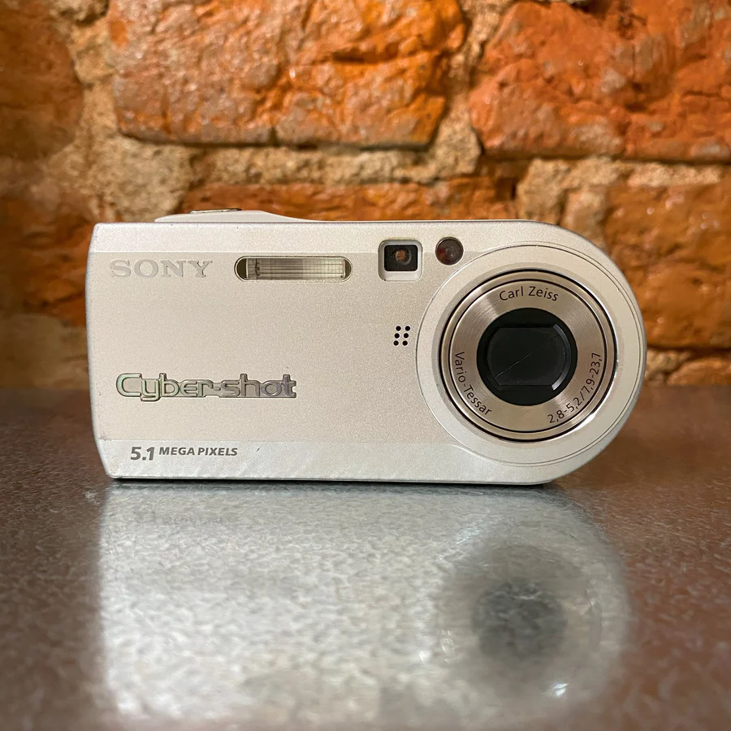
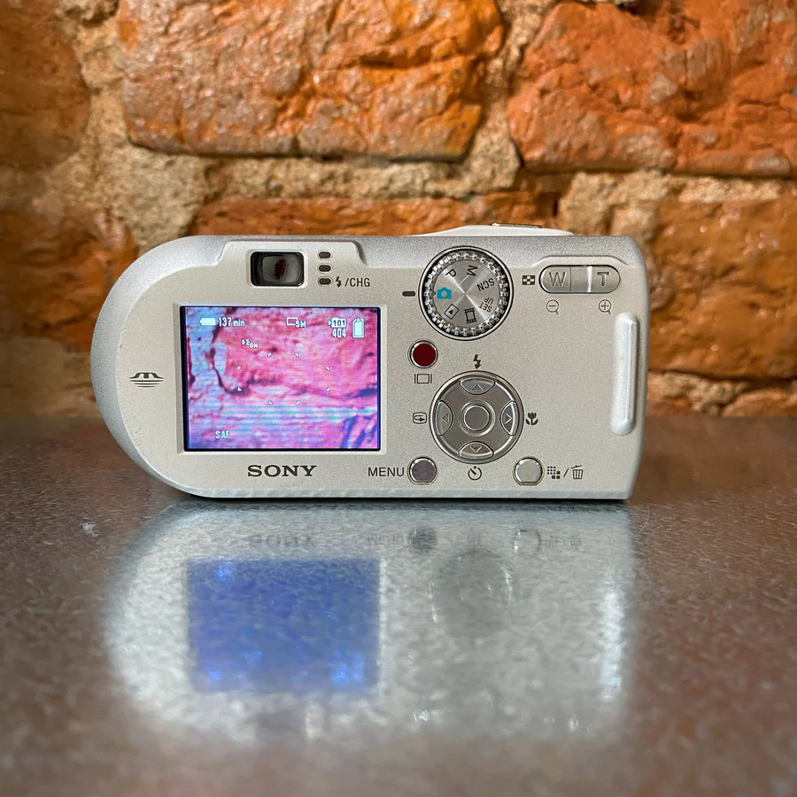

Купить Sony Cyber-Shot DSC-P100 цифровой фотоаппарат
Стальной корпус. Оригинальная зарядка, карта памяти. Wide 2.8 Диафрагменное число (F), tele 5.2. Минимальное фокусное расстояние 38 мм. Минимальное расстояние съемки.


Объектив
- Оптический Zoom 3 x
- Диафрагменное число (F), wide 2.8
- Диафрагменное число (F), tele 5.2
- Минимальное фокусное расстояние 38 мм
- Минимальное расстояние съемки 0.1 мм
Матрица
- Число мегапикселей матрицы 5.2 Мпикс
- Физический размер матрицы 1/1.8"
- Разрешение по X 2592 пикс.
- Разрешение по Y 1944 пикс.
- Кроп-фактор 4.84
- Фокусировка
- Съемка
- Экспозиция ручные настройки выдержки и диафрагм
- Экспокоррекция +/- 2 EV с шагом 1/3 ступени
- Чувствительность ISO, мин 100
- Чувствительность ISO, макс 400
- Выдержка, макс 30 c
- Баланс белого-авто, предустановки
Режимы съемки
- Запись видео, макросъемка, серийная съемка
- Скорость быстрой съемки 1.7 кадров/с
Видоискатель
- Оптический
- Вспышка
- Максимальное расстояние действия вспышки 3.8 м
- Встроенная вспышка, подавление эффекта красных глаз
Экран
- Размер экрана 1.8 "
- Число точек LCD 134000
- Экран фиксированный
Память и интерфейсы
- Разъемы и интерфейсы USB, аудио, видео
- Версия USB 2.0
- Поддерживаемые карты памяти Memory Stick
- Память в поставке 32
- Запись видео и звука
- Число уровней JPEG 2
- Максимальное разрешение видеосъемки 640x480
- Максимальная частота кадров видеоролика 30 кадров/с
- Время записи видео лимитируется картой памяти
- Тип аккумуляторов свой собственный
Габариты и вес
- Ширина 108 мм
- Высота 52 мм
- Толщина 27 мм
Контакты